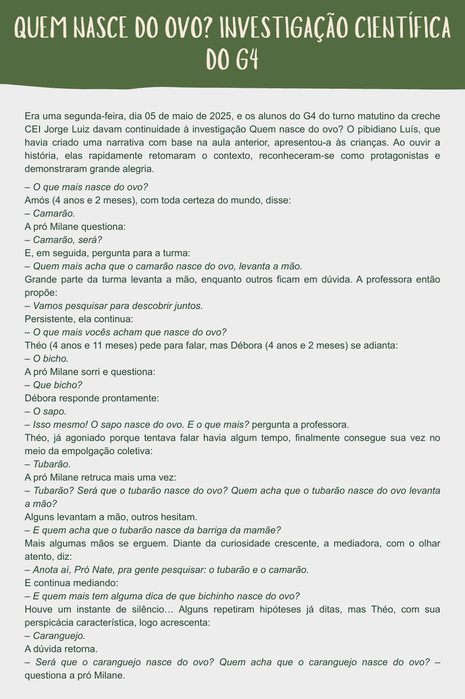
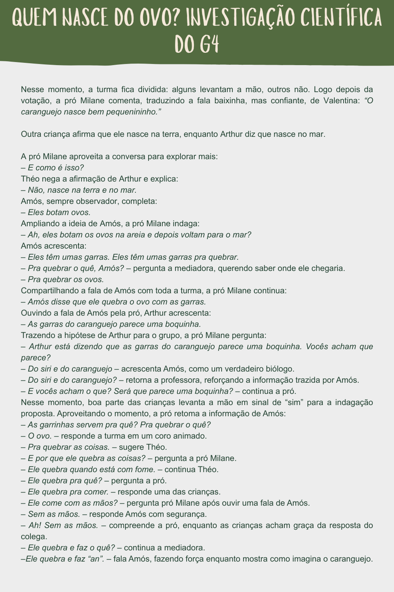
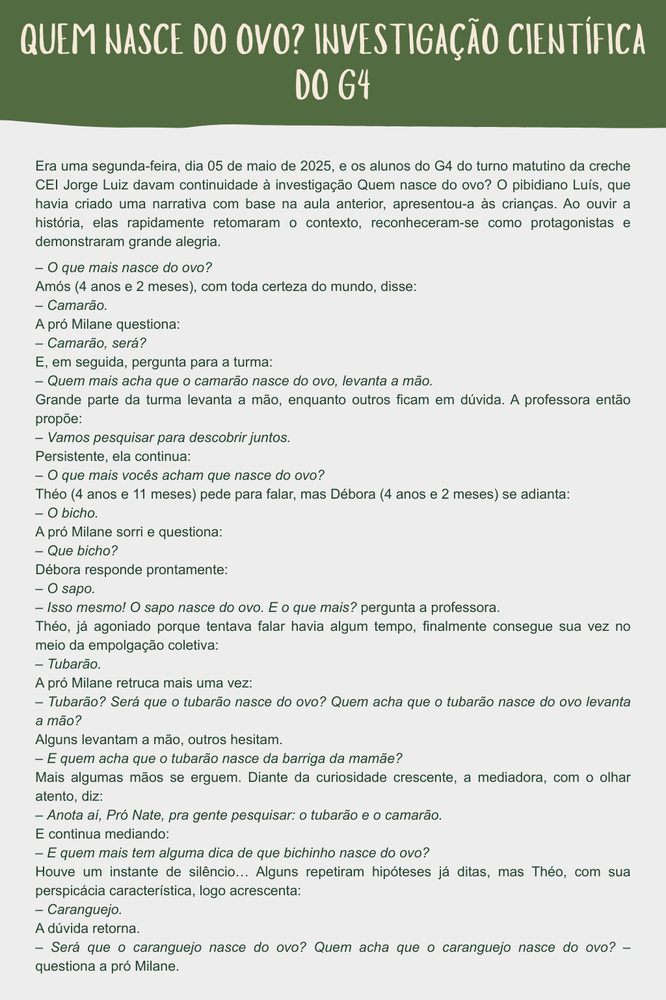
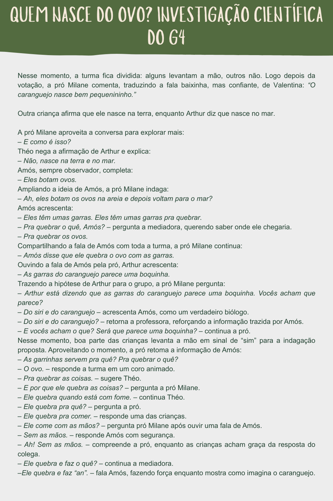
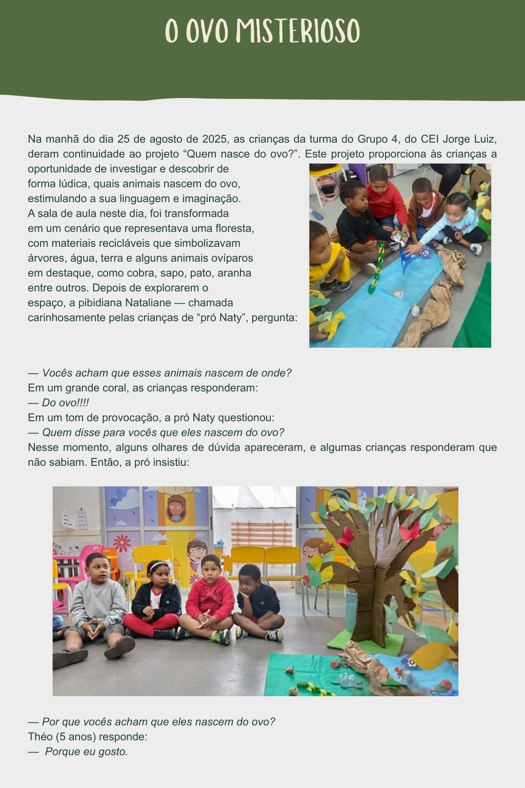
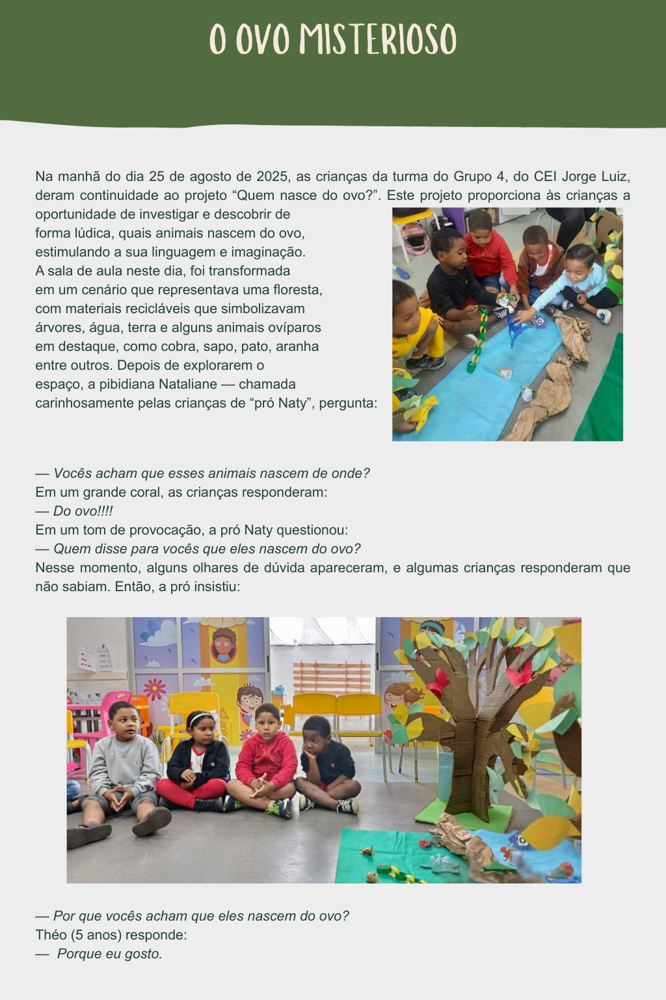
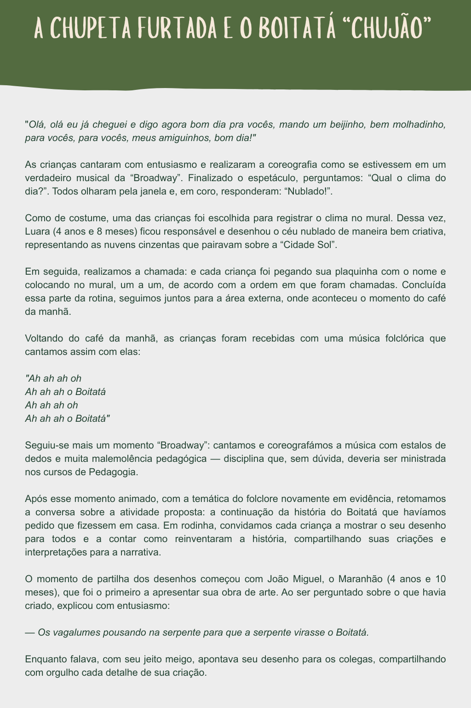
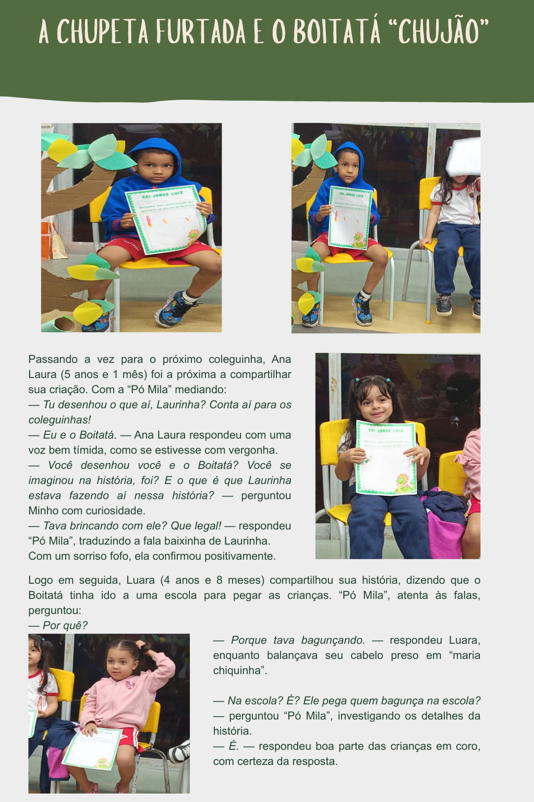
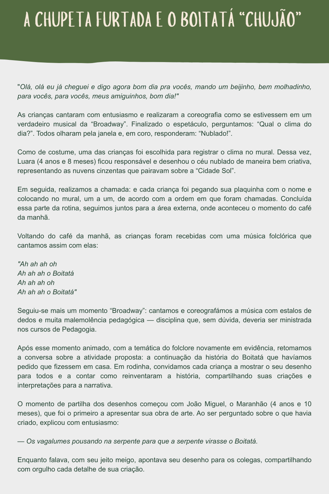
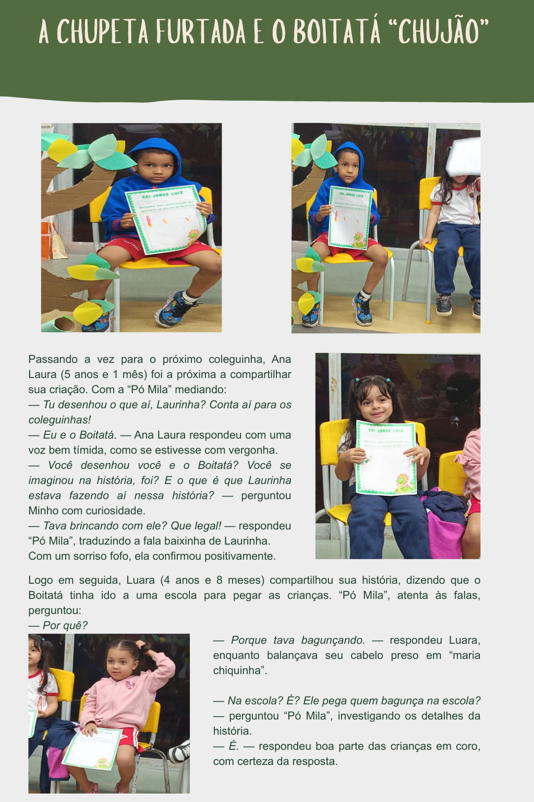

Sobre as narrativas
As narrativas do cotidiano são histórias simples do que acontece no dia a dia das crianças na escola: suas descobertas, brincadeiras, perguntas, invenções e interações. Elas podem aparecer como texto, foto ou vídeo — e, juntas, mostram como as crianças percebem e constroem o mundo ao seu redor. Ao narrar, a gente não “só registra”: a gente cuida do vivido, dá forma ao detalhe e transforma o que parece banal em experiência cheia de sentido.
Narrar o cotidiano é um ato pedagógico e também político: pedagógico porque nos ajuda a refletir sobre o que foi vivido, interpretado e sentido; político porque resiste ao silenciamento e à pressa que tenta padronizar as experiências infantis. Inspirados pelos Círculos de Culturas da Infância (CRIA), escolhemos escutar e acolher as vozes das crianças como centro da nossa práxis, criando memória e reconhecendo autoria. Aqui, cada narrativa é como uma pequena “fenda na casca”: quando olhamos com olhos de infância, uma casca de ovo, uma formiga ou um desenho pode abrir um universo — e é nesse universo que o aprender também vira poesia.
Duplas
I Semestre
- Segunda-feira: Luís Antonio e Nataliane Bispo
- Terça-feira: Clarice Santos e Emerson Meira
II Semestre
- Segunda-feira: Clarice Santos e Nataliane Bispo
- Terça-feira: Emerson Meira e Luís Antonio
Narrativas
I Semestre
Luís Antonio e Nataliane Bispo

 




Clarice Santos e Emerson Meira
II Semestre
Clarice Santos e Nataliane Bispo
 

Emerson Meira e Luís Antonio
 


